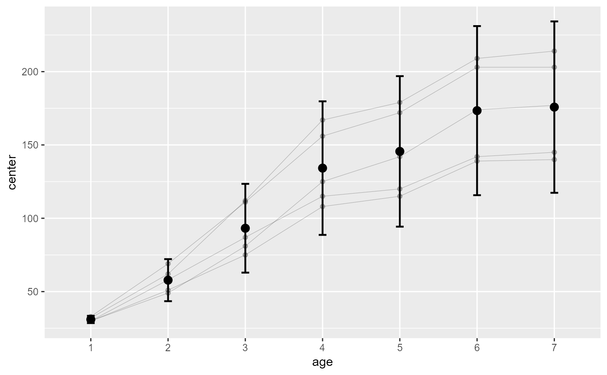

R/functionsPlotting_moderate.R
superbPlot.pointindividualline.RdsuperbPlot comes with a few built-in templates for making the final plots. All produces ggplot objects that can be further customized. Additionally, it is possible to add custom-make templates (see vignette 6). The functions, to be "superbPlot-compatible", must have these parameters:
a data.frame with columns "center", "lowerwidth" and "upperwidth" for each level of the factors;
a string with the name of the column where the factor going on the horizontal axis is given;
a string with the name of the column for which the data will be grouped on the plot;
a string with up to two additional factors to make the rows and columns panels, in the form "fact1 ~ fact2";
always contains "DV" for each participants and each level of the factors
(optional) list of graphic directives that are sent to the geom_point layer of the individual lines
(optional) list of graphic directives that are sent to the geom_point layer
(optional) list of graphic directives that are sent to the geom_line layer;
the parameter colorize can be used to obtain distinct colors for decreasing
segments of line (colorize = "bySlope"), to obtain distinct colors for each
participants (colorize = "byId"), or to have them all gray (default with colorize = "none").
(optional) list of graphic directives that are sent to the geom_superberrorbar layer
(optional) list of graphic directives that are sent to the facet_grid layer
a ggplot object
# This will make a plot with points and individual lines for each subject's scores
# we take the Orange built-in data.frame but shorten the names...
names(Orange) <- c("Tree","age","circ")
# Makes the plot:
superb( circ ~ age | Tree,
Orange,
adjustments = list(purpose = "difference", decorrelation = "none"),
plotLayout= "pointindividualline"
)

# if you extract the data, you can
# run this layout directly
#processedData <- superb( circ ~ age | Tree,
# Orange,
# adjustments = list(purpose = "difference", decorrelation = "none"),
#)
#
#superbPlot.pointindividualline(processedData$summaryStatistic,
# "age",
# NULL,
# ".~.",
# processedData$rawData)